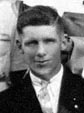
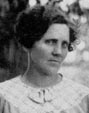
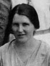
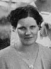
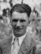
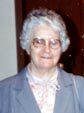
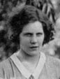
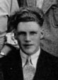
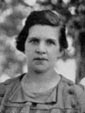

fiche familiale
*******************************************************************************
 |
Cyprien Barnabé décède à l'âge de 42 ans. Naissance en 1876 à La Pêche (Masham) Décès le 20 octobre 1918 à La Pêche (Masham) Il décéda de l'épidémie de grippe Espagnol, en même temps que 4 de ses enfants. Sépulture: au Cimetière de Ste-Cécile de La Pêche (Masham) Occupation: Cultivateur. Père: Eudogène-Ludger Barnabé Mère: Élise-Élizé Racine |
Âge de l'époux 25 ans, âge de l'épouse 22 ans.
 |
Épouse: Priscille-Précille Renaud décède à l'âge de 85 ans. Naissance le 5 juin 1879 à La Pêche (Masham) Baptisée Marie, Valérie, Priscille. Décès le 7 décembre 1964 à La Pêche (Masham) Sépulture: au Cimetière de Ste-Cécile de La Pêche (Masham) Père: Joseph Renaud Mère: Phélonise-Phélonie Coderre (sa famille) |
|  |
Enfant 1 Domina Barnabé décède à l'âge de 87 ans. Naissance en 1902 à La Pêche (Masham) Décès en octobre 1989 à La Pêche (Masham) Sépulture: au Cimetière de Ste-Cécile de La Pêche (Masham) Marié: 3 jul 1924 à Ste-Cécile de Masham (La Pêche) Conjointe: Marie-Anne Roy n. en 1903 d. en 1977. |
|  |
Enfant 2 Aurore Barnabé décède à l'âge de 86 ans. Naissance en 1903 à La Pêche (Masham) Décès le 30 juillet 1989 à La Pêche (Masham) Sépulture le 3 août 1989 au Cimetière de Ste-Cécile de La Pêche (Masham) Marié(e): 19 avril 1921 à Ste-Cécile de Masham (La Pêche) Conjoint: Olympe Gervais Conjoint: Edouard Bélair n. en 1903 d. en 1988. |
|  |
Enfant 3 Simone Barnabé décède à l'âge de 90 ans. Naissance le 10 janvier 1905 à La Pêche (Masham) Décès le 9 décembre 1995 à Ottawa. ON. Marié(e): 22 août 1928 à St-Joseph de Hull Conjoint: Ephrem Rochon |
Enfant 4 Lévina Barnabé
décède à l'âge de 12 ans.
Naissance en 1906 à La Pêche (Masham)
Décès le 27 octobre 1918 à La Pêche (Masham)
Décédée une semaine après son père de l'épidémie de grippe Espagnole.
-------------------------------------------------------------------------------
|  |
Enfant 5 Françoise-Aline Barnabé décède à l'âge de 86 ans. Naissance en mars 1907 à La Pêche (Masham) Décès le 6 août 1993 à Montréal. Marié(e): 28 fév 1938 à Ste-Anne d'Ottawa Conjoint: James-Patrick Gunn |
Enfant 6 Donat Barnabé
décède à l'âge de 10 ans.
Naissance en 1908
Décès le 21 octobre 1918 à La Pêche (Masham)
Décédé le jour suivant de son père, de l'épidémie de grippe Espagnole.
-------------------------------------------------------------------------------
|  |
Enfant 7 Pierre Barnabé décède à l'âge de 79 ans. Naissance en août 1909 à La Pêche (Masham) Dit "Pétrus" Décès en octobre 1988 Marié(e): 3 jul 1947 à Cathédrale d'Ottawa Conjointe: Simone Patry |
Enfant 8 Thomas Barnabé
décède à l'âge de 8 ans.
Naissance en 1910
Décès le 22 octobre 1918 à La Pêche (Masham)
Décédé le sur lendemain de son père de l'épidémie de grippe Espagnole.
-------------------------------------------------------------------------------
|  |
Enfant 9 Alice Barnabé décède à l'âge de 92 ans Naissance le 24 février 1912 à La Pêche (Masham) Décès: 20 jan 2005 à Montréal Sépulture: 25 jan 2005 à Dorval Religieuse, Soeur Marie-Cyprien, Fille de la Sagesse. |
|  |
Enfant 10 Marie-Laurence Barnabé décède à l'âge de 79 ans. Naissance le 30 mars 1914 à La Pêche (Masham) Décès le 22 mai 1993 à Hull. Marié(e): 24 fév 1936 à Cathédrale d'Ottawa Conjoint : Rodolphe-Georges Doucet |
|  |
Enfant 11 Gérard Barnabé décède à l'âge de 27 ans. Naissance en septembre 1915 à La Pêche (Masham) Décès le 5 juillet 1943 en Sicile, Italie. Sépulture en 1943 au Cimetière de Ste-Cécile de La Pêche (Masham) Soldat de l'armée Canadienne. Il décéda en mer Méditéranée lorsque son navire de guerre fut torpillé. |
Enfant 12 Jeannette Barnabé
décède à l'âge de 2 ans.
Naissance en 1916 à La Pêche (Masham)
Décès le 23 octobre 1918 à La Pêche (Masham)
Décédée trois jours après son père de l'épidémie de grippe Espagnole.
-------------------------------------------------------------------------------
|  |
Enfant 13 Hortence Barnabé décède à l'âge de 81 ans. Naissance le 28 juin 1918 à La Pêche (Masham) Décès le 15 décembre 1999 à Montréal. Marié(e): 2 sep 1939 à St-Édouard de Montréal Conjoint : Charles-Edouard Mireault Marié(e): 11 oct 1975 à Le-Bon-Pasteur de Laval Conjoint : Léopold Laverdure |